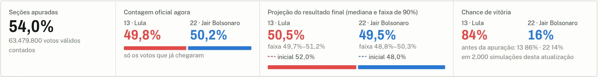
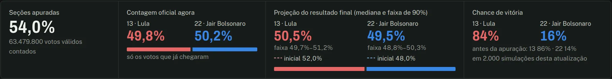
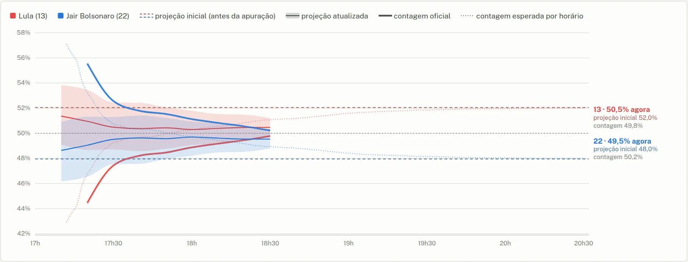
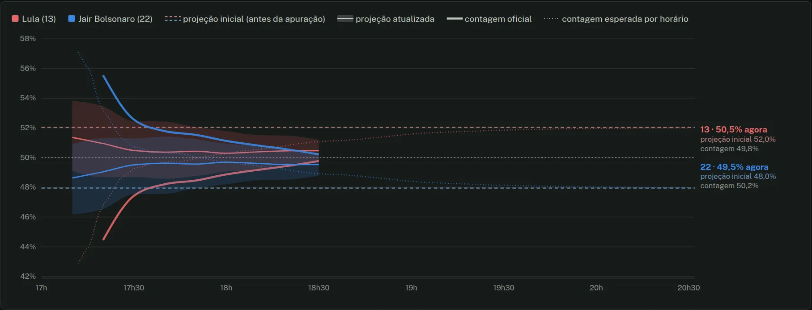
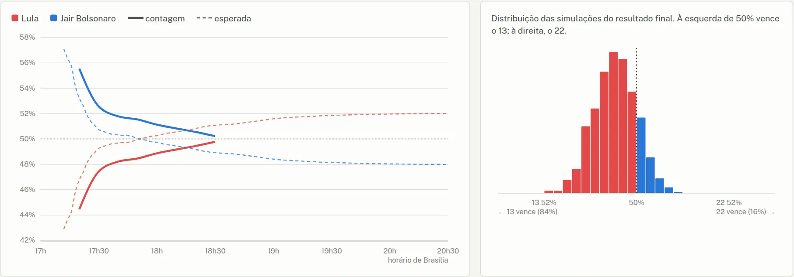
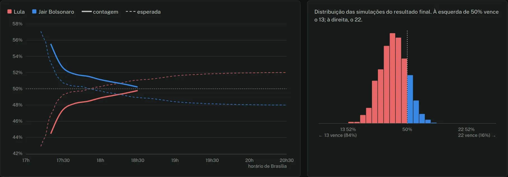

Como ler o painel ao vivo
O painel mostra duas coisas ao mesmo tempo: a contagem, os votos que já chegaram, e a projeção, onde a contagem deve terminar. Cada número nas imagens abaixo tem uma frase de explicação.
O placar
o resumo do momento, logo abaixo da barra de controle

- 1Seções apuradas: quanto do país já foi contado.
- 2Contagem oficial: só os votos que já chegaram. Engana no começo da noite.
- 3Projeção atualizada: onde o resultado deve terminar, com o que já chegou; a faixa tem 90% das simulações.
- 4Projeção inicial: o que o modelo esperava antes do 1º boletim, para comparar.
- 5Chance de vitória: em quantas simulações cada um termina na frente. Não mede o tamanho da vantagem.
O gráfico da projeção
a noite inteira, um candidato acima e outro abaixo de 50%

- 6Linha grossa: a contagem oficial ao longo da noite. Anda muito.
- 7Linha fina e faixa em cor viva: a projeção atualizada e seus 90%. Deve andar pouco.
- 8Tracejada apagada: a projeção inicial, fixa a noite toda. Antes do 1º boletim, vem com uma faixa.
- 9Pontilhada: onde a contagem deveria estar a cada horário, se tudo saísse como o esperado.
Curva da apuração e distribuição
logo abaixo do gráfico da projeção

- 10Curva esperada × real: a tracejada é como a contagem deve andar; a grossa, como está andando.
- 11Distribuição: o resultado final de cada simulação. À esquerda de 50% vence o 13; à direita, o 22.
Imagens: o próprio painel, no modo "Noite real de 2022", às 18h30, com 54% das seções apuradas. Repare: a contagem tinha o 22 na frente, e a projeção já indicava o 13, que venceu.
Em detalhe
O texto completo, para quem quer entender cada parte. Clique para abrir.
!O que a projeção não é
- Não é o resultado oficial. É uma estimativa estatística, com margem de erro. O resultado oficial é sempre o do TSE.
- A contagem parcial engana. Os boletins chegam em ordem: Sul e Centro-Oeste primeiro, Nordeste por último, e as capitais antes do interior. Quem lidera no começo da noite pode não liderar no fim, sem que nada de estranho tenha acontecido.
- Os primeiros boletins não representam o município. Costumam vir de aldeias, quilombos e comunidades pequenas, que votam muito diferente da sede. Por isso o modelo dá pouco peso a eles.
- Não é pesquisa e não vê a campanha. Debates, notícias e apoios entre o 1º e o 2º turno mudam o resultado e não entram no modelo. Ele parte do 1º turno e de como os eleitores migraram de voto em eleições passadas.
- Faixa de 90% não é certeza. Se o modelo estiver bem calibrado, o resultado fica fora da faixa em cerca de 1 a cada 10 noites.
1O placar
A faixa de quatro quadros logo abaixo da barra de controle. Os dois candidatos aparecem sempre lado a lado, na ordem do número na urna: 13 e depois 22. As cores seguem a convenção da imprensa (vermelho para o 13, azul para o 22) e não indicam preferência.
- Seções apuradas
- Quanto das seções eleitorais do país já foi contado, e quantos votos válidos (sem brancos e nulos) isso soma.
- Contagem oficial agora
- A porcentagem de cada candidato entre os votos válidos já contados. É o número que o TSE mostra. Ele muda muito ao longo da noite porque os votos chegam em ordem, e não diz sozinho quem vai ganhar.
- Projeção do resultado final
- Onde o modelo estima que cada candidato vai terminar quando todas as seções forem contadas. O número grande é a mediana das simulações (metade delas termina acima, metade abaixo). A faixa abaixo contém 90% das simulações. A linha "inicial", com o mesmo traço tracejado do gráfico, mostra a projeção feita antes de qualquer boletim, para comparar com o número grande. Antes do primeiro boletim, o quadro inteiro é a projeção inicial.
- Chance de vitória
- Em que fração das simulações cada candidato termina com mais da metade dos votos válidos. Logo abaixo aparece a chance que o modelo dava antes da apuração. Uma chance de 80% não é certeza: em 1 de cada 5 simulações, o outro candidato vence.
2O gráfico da projeção
É o gráfico principal. O eixo horizontal é o horário da noite, e o vertical, a porcentagem dos votos válidos. Há um conjunto de linhas para cada candidato, espelhados em torno de 50%. Em tom apagado da cor de cada um, o que se esperava antes de qualquer boletim, fixo a noite toda; em cor viva, o que está acontecendo.
- Projeção inicial (tracejada apagada, fixa)
- O resultado que o modelo esperava antes do primeiro boletim: a linha tracejada é a mediana de milhares de simulações (Monte Carlo). Ela tem a cor de cada candidato misturada com cinza, para ficar visivelmente mais fraca que a projeção atualizada. Enquanto nenhuma contagem chegou a 1% apurado, ela vem com uma faixa clara com 90% das simulações; quando os boletins começam a chegar, a faixa sai e fica só a linha, para não se misturar à faixa da projeção atualizada. Ela não muda durante a noite. Serve de régua: mostra quanto os boletins já afastaram a estimativa do ponto de partida.
- Projeção atualizada (linha fina e faixa, em cor viva)
- A mesma conta, refeita a cada atualização com os boletins que já chegaram: linha fina na mediana e faixa com 90% das simulações. A faixa estreita conforme a noite avança, porque sobra menos voto para estimar. A projeção deve andar pouco; se ela se afasta da tracejada, é porque os boletins estão chegando diferentes do esperado.
- Contagem oficial (linha grossa)
- A porcentagem de cada candidato entre os votos já contados, a mesma do TSE. No começo da noite ela costuma estar longe do resultado final, por causa da ordem de chegada dos boletins. No fim, as linhas grossa e fina se encontram.
- Contagem esperada por horário (pontilhada)
- Como a contagem oficial deveria aparecer em cada horário se tudo saísse como o esperado, levando em conta a ordem em que os boletins costumam chegar (a do 1º turno de 2026 ou, no modo 2022, a daquela noite). Compare a linha grossa com a pontilhada, e não com a tracejada: uma contagem acima da pontilhada às 18h é sinal de desvio a favor daquele candidato; acima da tracejada, não necessariamente.
As linhas coloridas só começam quando 1% das seções foi apurado. Antes disso, a contagem é feita de poucos boletins e oscila demais para o gráfico. Passe o mouse (ou o dedo) sobre o gráfico para ver os números de cada horário. No celular, os rótulos de cada candidato ficam embaixo do gráfico.
3A curva da apuração
O gráfico "Como a contagem deve andar, e como está andando" mostra só a contagem, sem projeção. A linha tracejada é a curva esperada: a votação esperada de cada seção, somada na ordem e no horário em que as seções foram apuradas no 1º turno. A linha grossa é a contagem real da noite. Nos modos ao vivo e Simulação 2026, a pontilhada é a curva do próprio 1º turno, contando só os votos do 13 e do 22.
O botão do eixo muda a régua horizontal:
- Por horário: mostra quando a contagem deve se aproximar do resultado. Útil para saber se o atraso é normal para aquela hora.
- Por % apurado: mostra quanto já foi contado. Útil para comparar com outras noites: uma noite pode atrasar uma hora e ainda assim seguir a mesma curva.
Para a versão detalhada dessa curva no 1º turno, com a "virada" explicada estado por estado, veja a curva da apuração.
4Distribuição das simulações e chance de vitória
O histograma ao lado da curva mostra o resultado de cada simulação da última atualização. Cada barra conta quantas simulações terminaram naquele intervalo. À esquerda da linha de 50% vence o 13; à direita, o 22. A barra fica na cor de quem vence naquela fatia.
A chance de vitória é a fração das simulações de cada lado. Ela não mede o tamanho da vantagem: um candidato pode ter 95% de chance com uma vantagem projetada de 1 ponto, se já faltar pouco para contar. Quando a reprodução de 2022 chega ao fim, uma linha vertical marca o resultado real.
5A tabela de estados
Fica recolhida: clique em "Ver os 27 estados e o exterior" para abrir. No celular, ela rola dentro da própria caixa, com o nome do estado preso à esquerda. Para cada estado:
- Apurado e andamento: a fração das seções do estado já contada.
- Contagem: a porcentagem de cada candidato entre os válidos já contados no estado.
- Projeção: onde o estado deve terminar.
- Desvio do esperado: a projeção do estado menos o que se esperava dele antes da apuração, em pontos percentuais, e a favor de qual candidato. Um estado que ainda não apurou nada também pode ter desvio, herdado dos outros estados da mesma região e do país (veja como os boletins mudam a projeção).
6Os modos: ao vivo, noite real de 2022 e simulação 2026
- Ao vivo (TSE)
- Na noite de 25 de outubro, a partir das 17h, o painel consulta a página de resultados do TSE a cada minuto, direto do seu navegador, e baixa só os municípios que mudaram. O histórico da noite fica guardado no seu navegador, para o gráfico não recomeçar se você recarregar a página. Antes do primeiro boletim, o painel mostra só a projeção inicial, com a faixa.
- Noite real de 2022
- Uma reprodução acelerada do 2º turno de 2022, com os boletins reais na hora em que chegaram. Serve para ver como o modelo se comportaria numa noite de verdade. O modelo só recebe o que se sabia antes daquela eleição (detalhes em os testes).
- Simulação 2026
- Uma noite inventada, para ensaiar o painel. Os votos de cada seção saem do 1º turno de 2026 redistribuídos como os eleitores migraram em 2014, 2018 e 2022, mais erros sorteados por região, estado, município e seção, e os boletins chegam na hora em que chegaram no 1º turno. Não é uma previsão: o resultado final dessa noite fica, por construção, no centro do que o modelo espera.
Nos dois modos de reprodução, o botão de play, a barra de tempo e o seletor de velocidade controlam o relógio da noite.
7Como os boletins mudam a projeção
"Quando a urna 1 é apurada, isso muda o esperado da urna 2?"
Sim, mas no nível de município, não de urna. O modelo nunca vê urnas isoladas: ele vê totais por município, e é o desvio de cada município em relação ao esperado que corrige o resto.
Passo a passo:
- O esperado de cada município. Antes da eleição, cada município recebe uma votação esperada no 2º turno: os votos de cada candidato do 1º turno, de brancos e nulos e a abstenção, redistribuídos como os eleitores migraram em eleições passadas (veja a simulação do 2º turno).
- Os dados chegam por município. A API ao vivo do TSE entrega, para cada município, quantas seções já foram contadas e quantos votos cada candidato tem. Não há dado urna por urna durante a noite.
- O desvio de cada município apurado. Para cada município que já mandou boletins, mede-se quanto a fatia do 22 entre os válidos dos dois foge do esperado. A conta é feita em logit, uma escala que leva em conta que perto de 90% há menos espaço para subir: 2 pontos a mais num município que dá 90% a um candidato pesam mais que 2 pontos num município que dá 50%.
- Separar o desvio em camadas. Esse desvio é explicado como a soma de um efeito do Brasil, um da região, um do estado e um do próprio município. Os efeitos são estimados juntos, com todos os municípios já apurados, por uma regressão bayesiana hierárquica: cada efeito começa em zero (o esperado) e só se move quando os dados pedem. Cada município pesa conforme o tamanho da sua amostra, medida em eleitores das seções já contadas. A regressão é robusta a valores extremos: um município muito fora do padrão conta, mas com influência limitada.
- Os municípios que ainda não apuraram herdam os efeitos do Brasil, da sua região e do seu estado. É assim que um desvio visto em um lugar se espalha para o que falta.
- Um município apurado em parte herda também 70% do seu próprio desvio, ponderado pelo tamanho da amostra: com poucas seções contadas, quase nada; com a maior parte contada, perto dos 70%. É por isso que as primeiras seções de aldeias e comunidades pequenas não arrastam a projeção do município inteiro.
- Comparecimento. O número de votos válidos que ainda faltam em cada estado também é corrigido pelo comparecimento visto nas seções já contadas.
- Incerteza e ordem de chegada. Cada projeção sorteia milhares de vezes os efeitos e os desvios de cada município (Monte Carlo) e soma os votos que faltam. Como os primeiros municípios de um estado não são uma amostra ao acaso (capitais antes do interior), o que falta recebe um choque extra, do país e de cada estado, que encolhe à medida que a apuração avança. Das simulações saem a mediana, a faixa de 90% e a chance de vitória.
Um exemplo: o Paraná chega abaixo do esperado
Suponha que os municípios do Paraná que já chegaram deem ao 22 três pontos a menos que o esperado. A projeção dos municípios do Paraná que faltam cai; a dos outros estados do Sul (a mesma região, Santa Catarina e Rio Grande do Sul) cai um pouco; e o resto do país quase não muda. Quanto o resto se move depende de quanto do resto já chegou:
| Situação no momento | Paraná | SC e RS | Outros estados |
|---|---|---|---|
| Paraná com 30% apurado; o resto do país com 20% apurado, dentro do esperado; SC e RS ainda sem boletins | −3,0 | −1,1 a −1,3 | ≈ 0 |
| Igual, mas SC e RS já com 10% apurado, dentro do esperado | −3,0 | ≈ 0 | ≈ 0 |
| Só o Paraná apurou (30%); nenhum outro estado tem boletins | −3,0 | −1,4 a −1,6 | −0,6 a −0,7 |
Mudança na projeção do 22 em cada estado, em pontos percentuais, em relação ao esperado antes da apuração. Contas feitas com o próprio modelo do painel e boletins inventados para o exemplo; o mesmo vale, espelhado, para o 13.
A lógica: se o resto do país está chegando como o esperado, o modelo conclui que o desvio é do Paraná e o deixa quase todo lá. Se SC e RS ainda não falaram, parte do desvio pode ser da região Sul, e eles herdam um pouco. Se o Paraná é o único com dados, o modelo ainda não tem como saber se o desvio é do estado, da região ou do país inteiro, e divide a correção entre os três. Note que "vizinho", aqui, quer dizer da mesma região: São Paulo e Mato Grosso do Sul fazem fronteira com o Paraná, mas estão em outras regiões.
8Os testes, e os limites deles
A noite real de 2022
No modo "Noite real de 2022", o modelo só sabe o que se sabia antes daquela eleição: o 1º turno de 2022 e a migração de votos de 2014 e 2018. Por isso a projeção inicial daquela noite era Lula 52,0% e Bolsonaro 48,0%, e o resultado real foi Lula 50,9% e Bolsonaro 49,1%. A diferença de cerca de 1 ponto é o erro do ponto de partida, e é o que os boletins precisam corrigir ao longo da noite.
Com 8% apurado, a contagem mostrava Bolsonaro na frente, enquanto a projeção já indicava Lula na frente.
Sendo honesto sobre o teste
- A largura da faixa foi calibrada nessa mesma noite. O choque da ordem de chegada (0,06 para o país e 0,05 para cada estado) e o tamanho típico dos desvios de estado e de município foram medidos em 2022. Então acertar 2022 não prova que a faixa está certa: é como corrigir a prova com o gabarito usado para estudar. Uma faixa calibrada assim tende a ser mais estreita do que deveria em uma noite nova.
- A simulação de 2026 também não é um teste independente. Os votos simulados saem das mesmas premissas do modelo, então ela mostra que o painel funciona, não que o modelo acerta.
- Foi uma noite só. O primeiro teste fora da amostra é a própria noite de 25 de outubro de 2026.
A metodologia tem o gráfico completo do teste de 2022 e os detalhes técnicos.